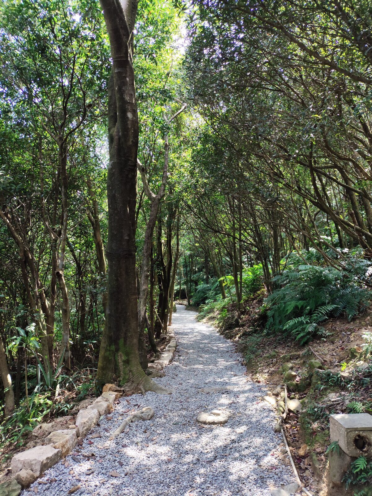
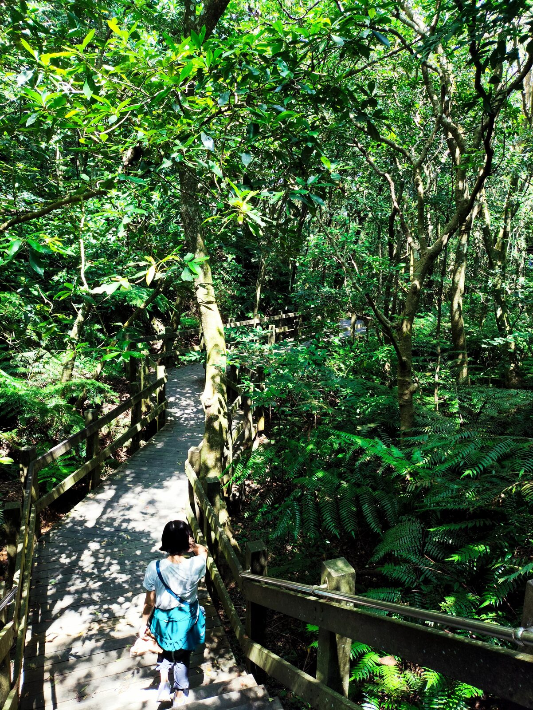
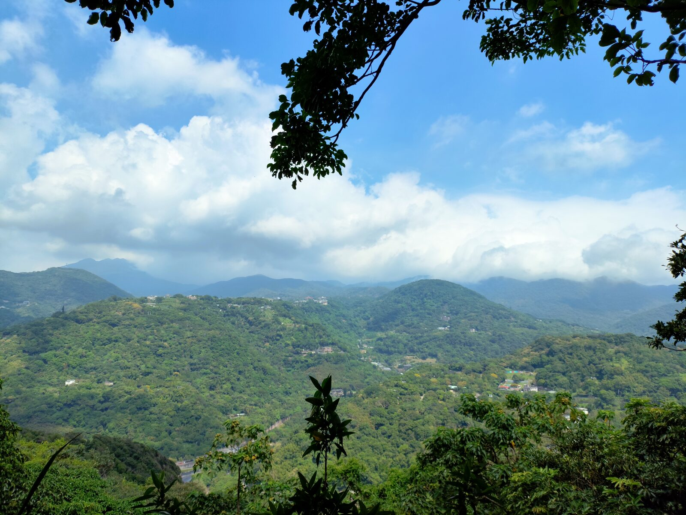
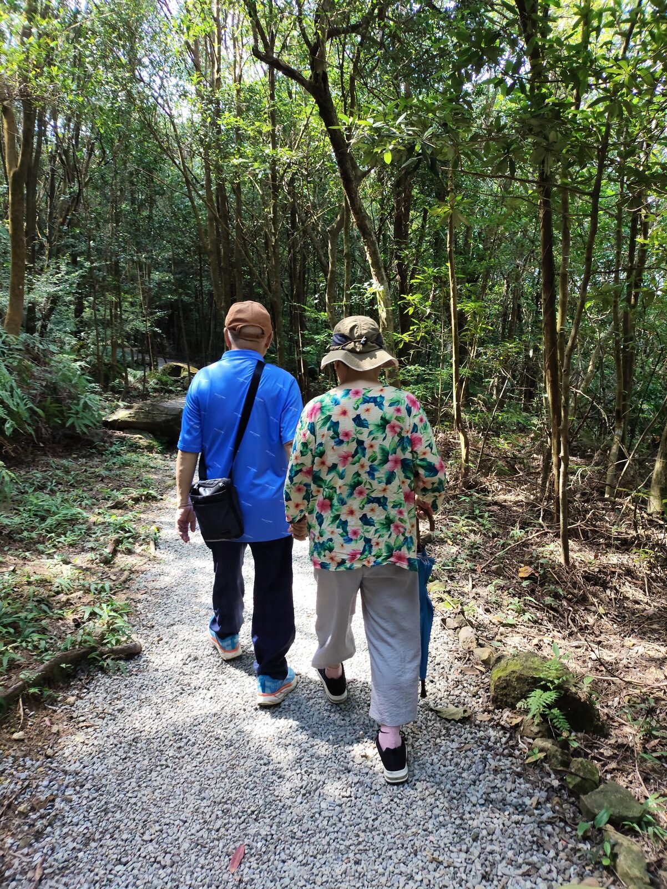

平坦的步道上，涼風輕輕吹著，溪水在林間流過。走出樹林，遠處的陽明山忽然出現在眼前，視野一下開闊了起來。

小時候，我們總是走在爸媽前面。
現在，卻換成我們走在他們後面。

看著爸媽的背影，才發現他們真的老了。爸爸牽著媽媽的手，慢慢地走著。走累了，就在樹蔭下找張椅子坐下來，吃點心、休息。

我站在一旁看著他們。
他們臉上的笑容，讓我忽然想起小時候出遊的時候。那時候，我和弟弟走在前面，爸媽也是這樣看著我們。
原來，走在前面的人，慢慢地變成了走在後面的人。
而我們甚至沒有察覺，這個位置是什麼時候換過來的。
PLACE NOTE / 翠山・碧湖
翠山步道與碧湖步道位於台北內湖、大直一帶，多為平緩碎石路與木棧道，適合親子與年長長輩慢走。沿途林蔭充足，偶有溪聲與開闊山景；實際路線與開放狀況請以出發前資訊為準。
文章與照片為本次散步的個人記錄。